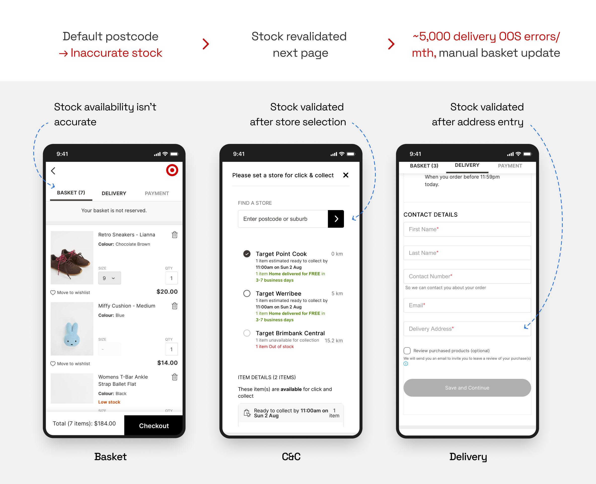
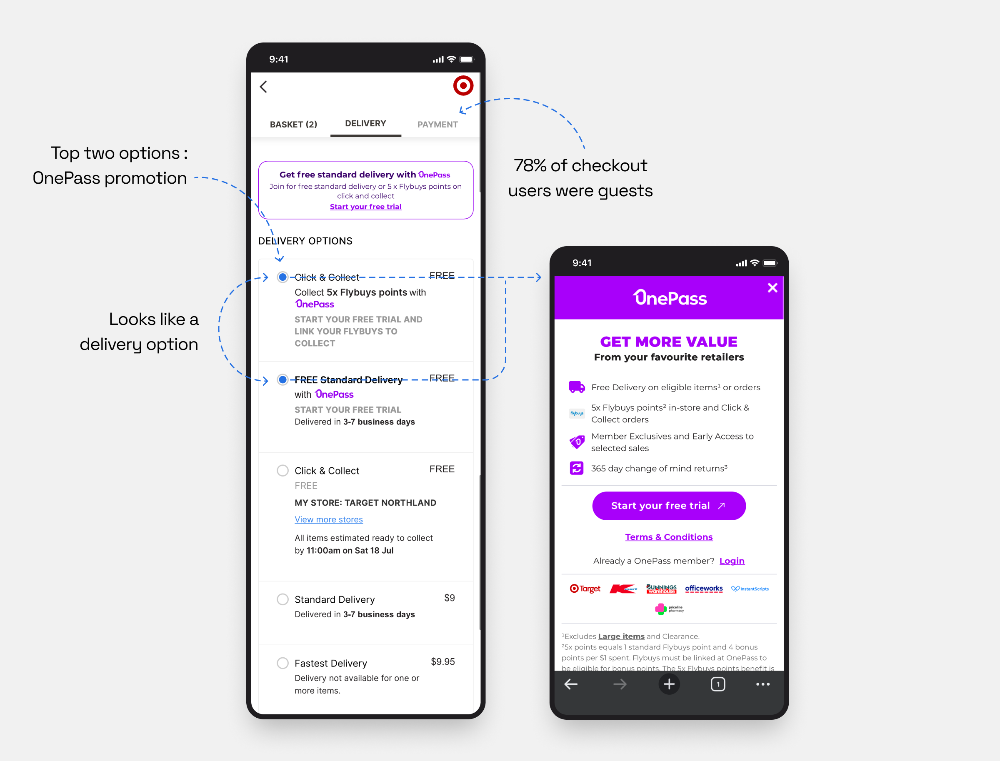

The Challenge
Legacy Structure
The original checkout followed a rigid multi-page structure:
Step 1
Basket
Step 2
Delivery & Contact Details & Payment
The Core Problems
-
Delayed Stock Validation
Stock wasn't accurately validated until customers entered a delivery address or selected a Click & Collect store. For delivery orders, out-of-stock items triggered an error, forcing customers to return to the basket and manually remove unavailable items (~5,000 cases/month). Click & Collect, however, automatically removed out-of-stock items.“Stock appears available but is out of stock at checkout. It’s so annoying when I only find out after I’ve gone through everything!”
— Participant 12
Delayed Stock Validation — Stock validation delayed to final step -
Delivery Selection Friction
78% of checkout customers were guests and exposed to OnePass promotions during checkout. Styled like delivery options, the promotions confused users and made it harder to identify actual delivery choices.“The OnePass option kept showing up and made the process confusing.”
— Participant 13
Delivery Selection Friction — Confusing delivery options
The Objective
Re-architect to a single-page checkout that:
- Validates real-time stock and delivery fees directly at the Basket stage.
- Simplifies delivery options by removing promotional clutter.